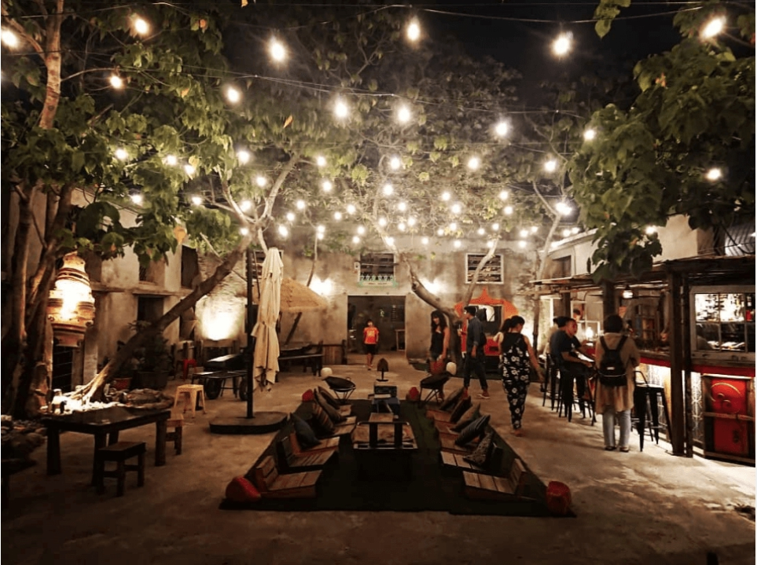

屏東鈕扣倉庫

屏東鈕扣倉庫是一個人文創場所，從廢棄的舊倉庫、工廠改建而成，工業風的外觀是他最大的特色，在這裡你可以喝上一杯啤酒、配上好聽的音樂，享受南台灣美麗的星空與熱情，這裡絕對是你出遊的好地方！

屏東鈕扣倉庫是一個人文創場所，從廢棄的舊倉庫、工廠改建而成，工業風的外觀是他最大的特色，在這裡你可以喝上一杯啤酒、配上好聽的音樂，享受南台灣美麗的星空與熱情，這裡絕對是你出遊的好地方！
九棚沙漠是台灣最大的沙漠，在這裡你可以體會到沙漠的荒無與孤寂，高聳的沙丘、海水會讓你對這裡肅然起勁喔！另外這裡還能夠 體驗沙漠越野車的滋味喔！
墾丁除了白沙灣、燈塔之外，還有個讓你每到以為在希臘的墾丁星砂灣，兩座相望的燈塔，在夕陽底下可是相當美麗的喔！
由老郡村改建而成的屏東勝利新村，再翻新之後成為了文創的熱門景點，這裡在夜間會有許多表演活動、美食、同時隨著今年的屏東燈會也有了許多新的擺設喔！絕對是大家前往屏東旅遊大推的地方！
位在山頂的高士神社是台灣為數不多的日本神社，神社以白色的鳥居著稱，在這裡可以由上而下的一挑屏東的美麗風景喔！